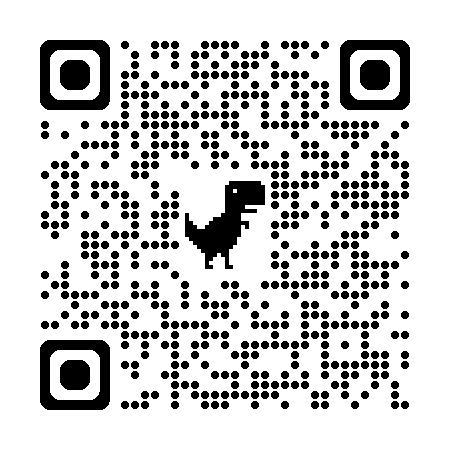
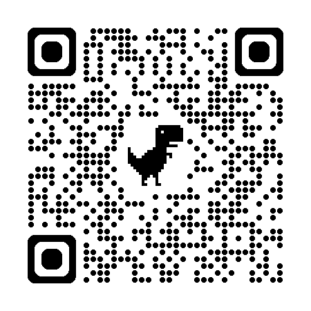

Sistemas de información y rol del analista 🕵️♂️
¿ Alguna vez te has preguntado cómo hace Instagram para mostrarte justo los memes que te gustan, o cómo sabe una tienda virtual qué productos quedan en su bodega? 📱✨
Detrás de toda gran aplicación, e incluso de las cosas más sencillas (como la lista de turnos de un hospital o las notas de tu colegio), existe un motor invisible: un **Sistema de Información**. Pero este motor no surge de la nada ni se programa a ciegas.
Antes de escribir una sola línea de código, hay un profesional clave que debe entender qué necesita la organización, quiénes usarán el sistema y qué problemas se quieren resolver. Ese profesional es el **Analista de Requerimientos** 🕵️♀️. Es el detective del software, el puente entre los usuarios y los programadores.
✨ ¡Bienvenido a esta misión! Aquí aprenderás cómo se compone un sistema de información, qué diferencia un dato simple del conocimiento estratégico y cómo es el fascinante trabajo del analista de sistemas. ¡Que comience el viaje! 🚀
Objetivos de aprendizaje
Reconocer los componentes esenciales de un sistema de información y su relación con los procesos, actores y objetivos de una organización.
Explicar el papel fundamental del analista de requerimientos en el levantamiento de información: comunicar, observar, interpretar y validar necesidades.
Aplicar criterios prácticos para identificar actores, problemas, necesidades y oportunidades que orienten el diseño de soluciones tecnológicas.
Diferenciar conceptualmente entre datos aislados, información contextualizada y conocimiento útil para la toma de decisiones.
Academia del Analista: Misiones
¡Completa los retos de cada acordeón para ganar puntos e insignias!
Actividades
🗺️ Actividad 1: Mapa del sistema de información organizacional
Selecciona un negocio cercano (tienda, farmacia, peluquería o biblioteca). Identifica un proceso que requiera mejora (ej. compras, préstamos, citas). Elabora una tabla con: Nombre de proceso, Actores, Datos, Información generada, Tecnología actual, Reglas de negocio y Problemas observados. Realiza un esquema donde muestres cómo fluye el dato hasta convertirse en información y decisión.
📝 Producto esperado: Documento de 2 a 3 páginas con tu análisis detallado y el esquema del flujo del sistema.
🏥 Actividad 2: Perfil del analista y análisis de actores (Clínica)
Caso: Una pequeña clínica quiere un sistema para citas médicas. Actualmente se anota en cuadernos y hojas de cálculo. Hay citas duplicadas, pérdida de datos y demoras graves de atención.
⭐ Generador de Matriz de Actores (Asistente Interactivo)
Crea y diseña tu propia matriz de actores respondiendo a los requerimientos del caso de la clínica. Agrega los actores uno por uno y luego copia el resultado para tu tarea escolar.
| Actor | Influencia | Necesidades | Problemas | Acción |
|---|
📝 Producto esperado: Matriz completa de actores (puedes usar el generador interactivo) más cinco preguntas iniciales redactadas por ti para entrevistar a los médicos.
📋 Actividad 3: Diagnóstico inicial de un problema organizacional
Selecciona uno de los siguientes contextos cotidianos: Control de inventarios en tienda de ropa, registro de asistencia con códigos QR en tu colegio, o préstamo de libros escolares. Realiza un diagnóstico: 3 síntomas observables, 2 problemas clave, 2 causas, 3 necesidades y define qué debe incluir y qué NO debe incluir la primera versión funcional de la plataforma.
📝 Producto esperado: Tabla de diagnóstico y delimitación inicial del alcance del proyecto de software.
Evaluación
Pon a prueba tu instinto de analista. Selecciona la opción correcta en cada pregunta para completar tu entrenamiento.
Recursos para profundizar
Para ampliar tu conocimiento, te recomendamos explorar los siguientes recursos:
-
IEEE SWEBOK Guide Version 4.0
Acceso a la guía internacional oficial sobre las áreas fundamentales de conocimiento de la Ingeniería de Software.
Ir al recurso
-
Análisis y Diseño de Sistemas - Satzinger (7.ª ed.)
Libro clave para comprender los sistemas en entornos corporativos reales y el modelamiento de requerimientos.
Ir al recurso
Bibliografía
https://www.computer.org/education/bodies-of-knowledge/software-engineering
https://www.cengage.com/c/systems-analysis-and-design-in-a-changing-world-7e-satzinger-jackson-burd/9781305117204/
https://www.microsoftpressstore.com/store/software-requirements-3rd-edition-9780735679665
https://www.mheducation.com/highered/product/software-engineering-practitioner-s-approach-pressman-maxim.html